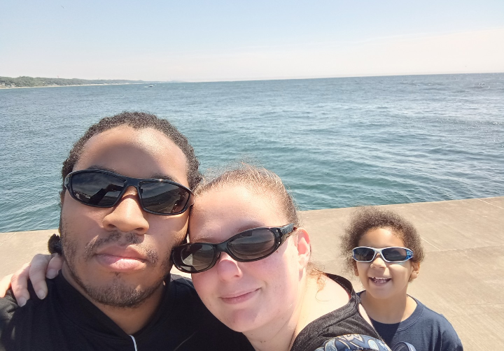
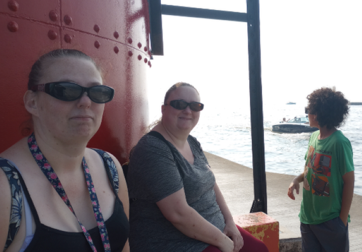

A day in the life
Life can get messy, difficult, cruel even, but I consider myself fortunate.
- I'm the parent of a wonderful 12 year old boy.
- I have a fiancee that is eager to marry me.
- I love going to college and I love the work I do.
Everyweek I get to work with kids, educators, and leaders. It is a great learning experience.
- I've gotten familiar with lesson plans.
- Learned about class leading and support.
- Been in every class form young 5s to 8th grade.
Words to live by
I have been writing since I was in 3rd grade. Writing things like poetry, observations, and research.
- The greatest writers of all time made sure to reflect people, culture, and nature itself in their writing.
- There are actually 4 phases of writing, idea phase, writing for yourself phase, writing for others phase, and editting phase.
- Make sure your are inspired and you do your research before you write.
Going to college (and life in general) has taught me a lot about writing.
Goals are like dreams that we make reality
Going to college was my first step toward transforming from a dreamer to an idealist.
- "You only have the right to pursue happiness; you have to catch it yourself." - Benjamin Franklin
- "I have never let my schooling interfere with my education." - Mark Twain
- “Tell me and I forget, teach me and I may remember, involve me and I learn.” - Benjamin Franklin
Music by Sergii Pavkin from Pixabay